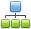

Preview Toolbar
The Preview Toolbar provides quick access to commands related to report viewing, editing and publishing.

All available commands can be divided into the following sections.
File Command
Use the following command to save a report to the file.
| Icon | Command | Desctiption |
|---|---|---|
 |
Save | Invokes the Save As dialog allowing you to save a report document to a file. |
Print Commands
The following commands allow you to change a report page's settings and print a report document.
| Icon | Command | Description |
|---|---|---|
 |
Invokes the Print dialog allowing you to specify the necessary settings and print a report document. | |
| Quick Print | Prints a report document using the default settings. | |
 |
Page Setup | Invokes the Page Setup dialog allowing you to adjust report page settings. |
 |
Scale | Invokes the Scale dialog allowing you to stretch or shrink report content to a percentage of its normal size or the number of pages. |
Navigation Commands
Use these commands to navigate through a report document.
| Icon | Command | Description |
|---|---|---|
 |
First Page | Switches to the first report page. |
 |
Previous Page | Switches to the previous report page. |
| Next Page | Switches to the next report page. | |
 |
Last Page | Switches to the last report page. |
Zoom Commands
Use these commands to zoom a report document.
| Icon | Command | Description |
|---|---|---|
 |
Zoom Out | Decreases a report document's current zoom factor. |
 |
Zoom In | Increases a report document's current zoom factor. |
| Zoom | Zooms a report document to a specific zoom factor from the drop-down list. |
Export Commands
Use these commands to export a report document to one of the supported third-party formats.
| Icon | Command | Description |
|---|---|---|
 |
Export | Invokes the Export Document dialog allowing you to export a report document into one of the supported third-party formats and save the resulting file on a hard drive. |
 |
Send | Invokes the Send via E-Mail dialog allowing you to export a report document into one of the supported third-party formats, save the resulting file on a hard drive and attach this file to a new empty message in the default mail program. |
Document Commands
Use these commands to change the visibility state of the Designer's panels and dialogs.
| Icon | Command | Description |
|---|---|---|
 |
Parameters | Shows/hides the Parameters Panel where you can specify report parameters before report preview generation is started. |
|  | Document Map | Shows/hides the Document Map Panel, which reflects a report document's structure in a tree-like form. |
 |
Thumbnails | Shows/hides report thumbnails used to quickly navigate between document pages. |
 |
Editing Fields | Highlights all editing fields to quickly discover which of the document elements are editable. |
| Search | Shows the Search Panel, which allows you to find a specified text throughout a report document. | |
 |
Watermark | Invokes the Watermark dialog that allows you to add a text watermark to a report or turn a picture into a report's background. |